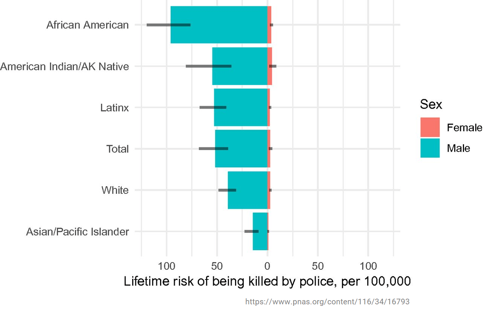
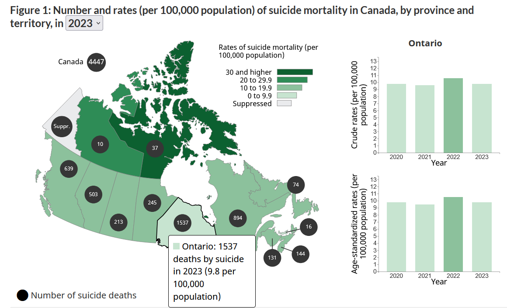

Tutorial 02
Basic Statistical Terminology
LEARNING OBJECTIVES
- Be familiar with basic terms of quantitative data analysis
- Calculate proportions and percentages
- Construct and analyze frequency, percentage, and cumulative distributions
READINGS
Readings are available on Quercus.
- Wheelan, Charles. 2014. “Descriptive Statistics: Who Was the Best Baseball Player of All Time?” Pp. 15–35 in Naked Statistics: Stripping the Dread from the Data. New York: W. W. Norton & Company.
TERMS
|
|
Statistics Vocabulary
I’m interested in sociology. Why do I have to learn about statistics?
Students often arrive in statistics classes wondering why they are required to take this class. Watch this video for a summary of how sociologists do sociology and how statistics fits into the bigger picture [~10 minutes].

Before we can analyze data, we need to identify the unit of analysis: who or what is being studied. The unit of analysis can be people, institutions, groups, things, countries, states, and so on.
Rarely do scientists have the time to study an entire population of interest, so we usually take a sample.
POPULATION
All units of analysis (people, institutions, groups, etc.) in which the researcher is interested.
SAMPLE
A subset of people (or institutions, groups, etc.) selected from a population.
A note on notation:
N refers to population size
n refers to sample size
Heads Up!
The capitalization of the symbols/notations in statistics are meaningful.
Capital letters are typically used when describing a population. Lowercase letters are often used when describing a sample.

Descriptive vs. Inferential Statistics
In this course, you will learn about descriptive and inferential statistics. There are two types of statistics:
DESCRIPTIVE STATISTICS
Procedures that help us organize and describe data collected from a sample or population.
INFERENTIAL STATISTICS
Making underlying predictions or inferences about a population using observations and analyses from a sample.
Watch this short video for a more detailed explanation of the difference between the two [3 minutes].

We will focus on descriptive statistics the first few weeks of the course, before moving on to inferential statistics.
Indicate whether the following uses descriptive or inferential statistics
Tidy Data
Quantitative researchers commonly analyze data stored in tables, where data is recorded in a combination of rows and columns (think spreadsheets).
Tidy data is a specific way of organizing data into a consistent format (how the data is organized in rows and columns).
Tidy data files contain one line for each observation, such as a record or person (also called a “respondent”). Each column generally represents a single variable.

VARIABLES
Any factor, trait, or condition that can exist in differing amounts or types.
Variables are attributes that describe a person, place, thing, or idea that we can then measure. They can be thought of as characteristics that vary.
Variables must be mutually exclusive (classify every observation) and exhaustive (one category for each observation).
There are three rules that make a dataset tidy:
- Each variable must have its own column.
- Each observation must have its own row.
- Each value must have its own cell.

To conduct statistical analyses, we need to know the scale of measurement for a variable. There are different ways that variables can be measured.
Consider how we might measure happiness in a survey.
People could tell us they either are happy or they are not happy. They could tell us how happy they are, such as very unhappy, somewhat unhappy, somewhat happy, or very happy. We could ask people to rate their happiness on a scale from 1-10, with 1 being not at all happy and 10 being ecstatic! Or, we could ask people to tell us what emotion they most felt throughout the day (e.g., happy, sad, content, joyful, anxious, and so on).
These options are all different levels of measurement.
Measurement Levels
Watch this short video explaining the different types of data that scientists collect [~6 minutes].

Terms
DICHOTOMOUS (aka binary) A variable with only two categories.
NOMINAL
A variable made up of categories that cannot be ordered according to rank.
ORDINAL A variable made up of ranked categories, but there is no systematic and measurable numeric difference between the categories.
INTERVAL-RATIO A variable with categories that are rank-ordered and expressed in the same units.
Transforming Variables
One kind of variable can be transformed into another kind of variable. Properties that can be measured at a more precise level can also be measured at a less precise level, but not vice versa.
Example:
Years of education, an interval variable, can be dichotomized into “high school graduate” vs. “not a graduate.”

Identify the following as nominal level, ordinal level, or interval-ratio level data.
Frequency Distributions
Once we’ve collected the data from a sample, we evaluate the responses. Are all the responses alike? Did people pick one answer category more than others? Are lots of people middle class or are some people very poor and some people really rich?
To answer these questions, researchers analyze the distribution of the data.
DISTRIBUTION:
Shows all the possible values (or intervals) of the data and how often they occur.
FREQUENCY DISTRIBUTION
A table reporting the number of observations falling into each category of the variable.

Distribution Tables
A common first step in data analysis is to create a table showing the number of observations for each value of a variable. This is called a frequency table. It consists of two columns.
The first column includes the variable and the response categories.
The second column reports the number of cases in each category, as well as the total number of cases (i.e., sum of all frequencies).
Table 01. Attitudes about sex before marriage

Survey question: There’s been a lot of discussion about the way morals and attitudes about sex are changing in this country. If a man and woman have sex relations before marriage, do you think it is ____________.
Frequency tables are important for understanding data, but sometimes they can be misleading if the frequencies aren’t considered in context.
Let’s look at an example.
Think Like a Statistician:
Are women more likely than men to say premarital sex is “not wrong at all”?
We start by looking at the frequency table that shows men and women’s number of responses for each category.
Table 02. Attitudes about sex before marriage by gender
premarsx | male | female |
|---|---|---|
always wrong | 4,159 | 7,116 |
almost always wrong | 1,499 | 2,388 |
wrong only sometimes | 3,904 | 4,792 |
not wrong at all | 10,672 | 11,086 |
Total | 20,234 | 25,382 |
Source: U.S. General Social Survey, 1972-2024
The table shows that 10,672 men and 11,086 women in the survey stated sex before marriage was ‘not wrong at all.’
If 414 more women than men thought premarital sex was “not wrong at all”, why can’t we conclude that women are more likely than men to think sex before marriage is ‘not wrong at all?’
Relative Frequency Distributions
Examine the table again to see the total number of men and women in the sample. More women than men answered the survey, which we didn’t consider when comparing the frequencies alone.
RELATIVE FREQUENCY DISTRIBUTION
A table showing the proportion or percentage for each value of a variable.
To account for the greater number of women than men in our sample, we use a ‘relative frequency distribution,’ showing either proportions or percentages to make our comparison.
Proportions are between 0 and 1.0.
\(Proportion = \frac{f}{n}\)
Percentages are between 0 and 100.
\(Percentage = proportion × 100.\)
In our table, we need two numbers to make the calculations.
- The count of men who said sex before marriage was ‘not wrong at all’ (f = 10,672)
- The total number of men who answered the survey question (n = 20,234)
\(\frac{10,672}{20,234} = .53\)
This is the proportion of men who said sex before marriage was ‘not wrong at all.’
It’s often easier to talk about these numbers in percentages. So, we just multiply the proportion (.53) by 100.
53% of men said sex before marriage was ‘not wrong at all.’
Let’s use R as a calculator to do the same thing for women.
Click the Run Code button below.
(11086/25382)*100(11086/25382)*100HINT: Just push the Run Code button to see the output.
In other words, 44% of women said sex before marriage was ‘not wrong at all.’
When do the same calculation for each category for both men and women, we can display these numbers in a frequency table.
Table 03. Attitudes about sex before marriage by gender
Men | Women | |||
|---|---|---|---|---|
premarsx | n | % | n | % |
always wrong | 4,159 | 21 | 7,116 | 28 |
almost always wrong | 1,499 | 7 | 2,388 | 9 |
wrong only sometimes | 3,904 | 19 | 4,792 | 19 |
not wrong at all | 10,672 | 53 | 11,086 | 44 |
Total | 20,234 | 100 | 25,382 | 100 |
Source: U.S. General Social Survey, 1972-2024
Heads Up!
Percentage columns ALWAYS sum to 100%.
\({21 + 7 + 19 + 53 = 100\%}\)
Let’s review our findings: 53% of men but only 44% of women reported sex before marriage was ‘not wrong at all.’
Your Data Take!
A greater proportion of men (53%) than women (44%) say premarital sex is “not wrong at all.”
To summarize, in order to compare meaningfully across groups, a frequency should be converted into a proportion or a percentage.
Working Backwards
You can also work backwards to calculate a frequency for a particular category if all you know is the percentage for the category and the total frequency.
For example, if you know that 9% of women from a sample of 25,382 believe sex before marriage is ‘almost always wrong,’ you can calculate the number of women in this category.
\(proportion * total freq = freq\)
Let’s use R as a calculator to prove it to ourselves:
Replace the blank line with x to calculate the frequency from the proportion. Then, click the Run Code button below to confirm your results.
# Get the %
x <- 2388/25382
x # show x
# Get the freq
__ * 25382# Get the %
x <- 2388/25382
x # show x
# Get the freq
x * 25382HINT: Did you replace __ with the letter ‘x’ (no quotes)?
Cumulative Distributions
There’s one more distribution to know about.
Cumulative Distribution
A table showing the number or percentage of observations at or below a given category.
Sometimes researchers want to know the percentage of people in two or more categories. These descriptions are displayed as cumulative distributions.
Maybe we wanted to know the percentage of people who think premarital sex is always OR almost always wrong. We need to sum the percentages from each of the categories to get our answer.
In 2024, 23% of people reported premarital sex is ‘always’ or ‘almost always’ wrong.
Table 04. Attitudes about sex before marriage by gender
premarsx | n | % | cumulative % |
|---|---|---|---|
always wrong | 357 | 17 | 17 |
almost always wrong | 122 | 6 | 23 |
wrong only sometimes | 258 | 12 | 35 |
not wrong at all | 1,378 | 65 | 100 |
Total | 2,115 | 100 | 175 |
Source: U.S. General Social Survey, 2024
\({\color{mathGreen} 17} + {\color{mathOrange} 6} = {\color{mathRed} 23\%}\)
Rates
Sometimes it makes sense to report frequencies as rates, rather than as proportions or percentages. Common rates sociologists might be interested in include the marriage rate, birth rate, or crime rate.
RATES
\(\frac{Actual\;occurrences}{possible\;occurrences}\)
Rates are often expressed per 1,000 or 100,000. (Calculate basic rate and multiply it by 1,000 or 100,000.)
Examples:
- Canada’s divorce rate decreased from 12.7 per 1,000 in 1991 to 5.6 per 1,000 in 2020.
- The 2021 suicide rate of 14.8 per 100,000 population for middle aged Canadians (30-59 years old) was the highest of any age group.
- Canada’s total fertility rate reached a new low in 2023 of 1.26 children per woman.
Rates can also be calculated for sub-groups.

As this chart shows, nearly 100 in 100,000 Black men and boys will be killed by U.S. police over the life course. Notice the different ways rates can be conveyed:
- Latino men and boys have an estimated risk of being killed by police of about 53 per 100,000.
- Asian/Pacific Islander men and boys face a lifetime risk of between 9 and 23 per 100,000.
- White men and boys face a lifetime risk of about 39 per 100,000.
Heads up!
The denominator must include all possible occurrences.
Can the divorce rate be calculated as follows?
\(\frac{\text{Number couples divorcing in 2024}}{\text{Number couples marrying in 2024}}\)
No! The denominator should consist of all couples who could divorce—including every couple that is married at any point in 2024, even if they got married before 2024.
Summary:
Nominal variables:
can have frequency distributions, cannot have cumulative frequency distributions
Ordinal:
can have frequency distributions and cumulative frequency distributions
Interval-ratio:
can have frequency distributions, cumulative frequency distributions, and rates
Figures
Sociologists want to understand data because it helps us understand the social world. Raw data, like the distributions we have reviewed, are often presented as statistical graphs. Graphing data helps people get the overall summary of a large amount of information quickly.
Tables are especially good at conveying the details about the relationship between variables. But, graphs help direct attention to the take-away of the relationship, helping people focus on the bigger picture rather than the details.
Let’s consider some examples. Each of the graphs below could be presented as a table. But, the audience would have to work very hard to get the take-away point of the data from a table.
A bar graph is used:
for nominal or ordinal variables,
to show frequencies or percentages,
using separated rectangles, with height proportional
to the frequency or percentage.

A histogram is used:
for interval-ratio variables,
to show frequencies or percentages,
using separated rectangles, with height proportional
to the frequency or percentage.

A line graph is used:
for interval-ratio variables,
to show frequencies or percentages,
joining by category the frequency or average with a line.

A statistical map is used:
for interval-ratio variables,
to show geographical variations, often in ratios,
using variation in color or hue.

Learning Check 02
Please answer the following questions to verify you understand the topics in this module.
Fifty Toronto couples were surveyed and asked to report the number of children under the age of 18 years in their household. The fifty families reported the following numbers of children:
0, 0, 1, 6, 2, 1, 0, 0, 1, 2, 3, 0, 4, 1, 1, 2, 2, 2, 4, 0, 1, 1, 1, 0, 0, 2, 2, 10, 7, 2, 4, 4, 1, 2, 2, 2, 1, 5, 1, 6, 0, 0, 1, 1, 1, 2, 2, 9, 0, 2 Create a table that displays the number, percentage, and cumulative percentage of families with each number of children. You will need to create a table by hand or using a spreadsheet such as GoogleSheets or Excel. [Do NOT collapse any categories.]
Then, answer the following questions:
Using the table below, answer the following questions.
Fill in the missing cells of the table (by hand or using a spreadsheet).

Source: U.S. General Social Survey, 2024